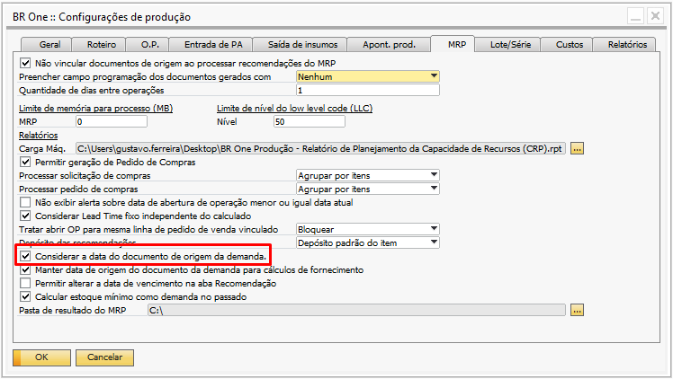

Configurações MRP
Com o MRP é possível identificar os itens de compra e produção em determinado período de acordo com a necessidade da empresa, inicialmente é necessário realizar as parametrizações na base para utilização do processo.
Na tela ‘Configurações de produção’ na Aba ‘MRP’ é necessário realizar as configurações globais do processo.
{kind=link}
Não vincular documentos de origem ao processar recomendações do MRP
Quando esse flag está desmarcado, todos os documentos criados requisitando e/ou atribuindo itens ao estoque serão vinculados à OP criada através da recomendação do MRP.
Por exemplo , foi criado um pedido de venda 101 para o PA01_03 solicitando 50 peças desse item:
{kind=link}
O PA03_MRP possui os itens de compra Comp02_MRP e Comp03_MRP em seu roteiro:
{kind=link}
Ao executar o ‘Assistente de MRP’, é recomendada a criação da ‘Solicitação de compra’ Comp02_MRP e Comp03_MRP e de uma ‘Ordem de produção’ para o item PA03_MRP.
{kind=link}
Realizando o processamento dessas recomendações, os documentos serão criados e vinculados à ordem do item pai, nesse caso, o PA01_MRP.
{kind=link}
A solicitação de compra dos Comp02_MRP e Comp03_MRP são encontradas na aba ‘Compra/OP’ da aba ‘Documentos’:
{kind=link}
Quando a flag da configuração desse processo está marcada, os documentos vinculados à ordem criada através da recomendação do MRP não são vinculados, assim, os documentos não são incluídos automaticamente na aba ‘Documentos’.
{kind=link}
Considerando o mesmo cenário acima, ao executar o MRP os documentos não são vinculados a OP do item pai:
{kind=link}
{kind=link}
Preencher campo programação dos documentos gerados com
Esse campo define se ao processar uma recomendação do MRP (Ordem de produção), no campo ‘Programação’, irá ser setado o ‘Item pai’, o ‘Id da execução do MRP’ ou se ele ficará ‘vazio’.

Nenhum: o campo ‘Programação’ ficará vazio.
Item pai: no campo ‘Programação’ indicará o ‘Item pai’ da solicitação ou da ordem de produção.
Id da execução do MRP: no campo ‘Programação’ irá o id da execução do MRP.
Exemplos:
Recomendação MRP para o item PA02_MRP:
{kind=link}
Configuração como Item pai:
{kind=link}
Configuração como Id da execução do MRP:
{kind=link}
Quantidade de dias entre operações
Esse campo define a quantidade de dias a serem considerados entre uma operação e outra, quando o script realiza o cálculo das datas das operações de uma Ordem de produção (criado através do MRP ou tela de Ordem de produção).
Considerando o seguinte cenário:
Calendário com 8 horas disponíveis por dia e sem finais de semana:
{kind=link}
Roteiro com os seguintes tempos variáveis:
{kind=link}
Uma previsão de venda com quantidade 100 peças para o item do roteiro:
{kind=link}
Ao executar o MRP considerando somente esta previsão de venda, serão obtidos resultados diferentes para a data de liberação e lead time, dependendo do que for parametrizado na configuração.
Quando a configuração estiver com o valor 1, será adicionado 1 dia de diferença entre as operações.
Logo, a data de liberação será no dia 25/04/2024 e o lead time será de 7 dias.
{kind=link}
Abaixo segue o detalhamento do cálculo realizado:
{kind=link}

Quando a configuração estiver com o valor 0 (zero), será considerado apenas o tempo do calendário configurado.
Logo, a data se liberação será no dia 01/05/2024 e o lead time será de 1 dia.

Abaixo, segue o detalhamento do cálculo realizado:

Limite de memória para processo (MB)
Para que não haja um uso de memória maior que a quantidade disponível para o MRP, deve ser definido neste campo o limite da memória, para quando o MRP estiver sendo processado.
Não há limite máximo ou mínimo para a memória.
{kind=link}
Limite de nível do Low Level Code (LLC)
Para que o sistema não trave, caso exista roteiros em loop infinito, pode-se definir um número máximo de nível que o cálculo de LLC irá descer para retornar com valores.
Por padrão, esse valor é 50.
{kind=link}
Caso o MRP identifique que algum roteiro com recursividade, será retornado a seguinte mensagem de erro durante a execução do MRP:

BR One :: Erro ao processar MRP. Retorno: 1). [Microsoft][ODBC Driver 17 for SQL Server][SQL Server]Maximum stored procedure, function, trigger, or view nesting level exceeded (limit 32).2). [Microsoft][ODBC Driver 17 for SQL Server][SQL Server]Checkin
Essa mensagem irá ocorrer independente do nível de LLC configurado.
Para encontrar o roteiro com recursividade o BR One possui a funcionalidade “Verificação de roteiros recursivos”, que pode ser acessada através do caminho abaixo:
Ajuda -> Support Desk -> Restaurar -> BR One -> BR One Produção: Verificação de roteiros recursivos

Ao clicar nessa funcionalidade, o add-on irá validar todos os cadastros de roteiros e irá identificar a estrutura que está recursiva:
{kind=link}
{kind=link}
Relatórios
Existe a possibilidade de gerar o relatório de ‘Carga Máquina’ dentro do MRP.
{kind=link}
O relatório é proveniente do Crystal Reports e o caminho deve ser previamente configurado em seu respectivo campo. O relatório será gerado a partir do ID da execução do MRP com base no que for executado.
{kind=link}
Permitir geração de Pedido de Compras
A flag ‘Permitir geração de Pedido de Compras’ definirá se o usuário gerará solicitação de compras ou pedido de compras através do MRP.
{kind=link}
As caixas de opções ‘Processar solicitação de compras’ e ‘Processar pedido de compras’ serão utilizadas para configurar como deverão ser processadas as recomendações sugeridas pelo MRP.
Para ‘Solicitação de compras’, o usuário poderá escolher entre:
{kind=link}
Agrupar por itens: Cria o documento de compra de acordo com os itens;
Seleção em documento único: Todos os itens processados irão para o mesmo documento de compra;
Grupo de itens: Os itens serão agrupados de acordo com o ‘Grupo de itens’;
Fornecedor preferencial: Os itens serão agrupados de acordo com ‘Fornecedor Preferencial’;
Fabricante: Os itens serão agrupados de acordo com o ‘Fabricante’.
Para ‘Pedidos de compras’, existem apenas duas opções:
{kind=link}
Agrupar por itens: Cria o documento de compra de acordo com os itens;
Fornecedor preferencial: Os itens serão agrupados de acordo com ‘Fornecedor preferencial’.
A opção padrão do add-on é ‘Agrupar por itens’, podendo ser alterada a qualquer momento.
Não exibir alerta sobre data de abertura de operação menor ou igual data atual
Este parâmetro indica se deve aparecer um alerta em tela quando usuário processar uma linha no ‘Assistente de MRP’ onde a data da coluna ‘Data de liberação’ seja igual ou menor que a data atual.
{kind=link}
Quando a flag estiver marcada indica ao addon que a mensagem de alerta não deve ser exibida em tela para o usuário. Com a flag desmarcada, a mensagem será exibida:

BR One :: Data de início da primeira operação da OP a ser aberta para o item nº X é menor ou igual a data atual. Continuar?
Neste caso, o usuário poderá escolher entre três opções:
Sim: Ao clicar em sim, a linha indicada na mensagem será processada normalmente.
Não: Ao clicar em não, o processo será cancelado.
Sim p/ todos: Ao clicar em Sim p/ todos, todas as linhas selecionadas que possuam a data de liberação menor ou igual a data atual serão processadas normalmente.
Considerar Lead Time fixo independente do calculado
Quando um PA estiver fixo em dias e a configuração ‘Considerar leadtime fixo independente do calculado’ estiver marcada, todas as operações devem iniciar e terminar no mesmo dia.
{kind=link}
Para o exemplo abaixo, será considerado que o calendário de compra e o calendário dos recursos é o mesmo, 8h por dia de segunda à sexta.
O item PA03_MRP é um item pai e para ele, há o pedido de venda com a data de entrega para o dia 15/02/2024.
{kind=link}
O item PA03_MRP tem leadtime fixo de 10 dias:

Ao rodar o MRP dia 23/01/2024, a seguinte recomendação foi feita:

Ambos os itens de compra Comp02_MRP e Comp03_MRP foram recomendados para compra no dia 01/02/2023 (quinta feira), onde os componentes serão liberados no mesmo dia e o PA03_MRP ficará pronto no dia 15/02/2023, contabilizando no total 10 dias úteis.
Tratar abrir OP para mesma linha de pedido de venda vinculado
Este parâmetro foi criado com a finalidade de bloquear ou alertar inserção da ordem de produção através da recomendação do MRP quando ela for vinculada a um pedido de venda e o mesmo já estiver vinculado à outra Ordem de produção que esteja com seu status diferente de ‘Fechado’ ou ‘Cancelado’.
{kind=link}
Portanto, é possível selecionar três opções de configuração:
Não validar: Quando selecionado ‘Não validar’, nada ocorrerá e a ‘Ordem de produção’ será inserida com o pedido de venda vinculado independentemente de o pedido estar vinculado ou não à outra ordem de produção.
Bloquear: Quando selecionado Bloquear’, uma mensagem será exibida, e a ação será cancelada e recomendação não será executada.
{kind=link}
BR One :: A OP a ser aberta para o item ‘x’ já existe para a mesma linha do pedido de venda a ser vinculado.
Alertar: Quando selecionado ‘Alertar’, uma mensagem será exibida ao usuário solicitando a confirmação do processo.
{kind=link}
BR One :: A OP a ser aberta para o item ‘x’ já existe para a mesma linha do pedido de venda a ser vinculado. Deseja criar novamente?
Caso usuário aceite, a ‘Ordem de produção’ será inserida normalmente e o ‘Pedido de venda’ em questão será vinculado.
Caso usuário não aceite, o processo será interrompido e a ‘Ordem de produção’ não será processada.
Existe também a possibilidade de negar todas as recomendações utilizando a opção ‘Não p/ todos’, entretanto, essa função só servirá para as recomendações seguintes, ou seja, todas as anteriores onde foi escolhida a opção ‘Sim’ serão processadas.
Depósito das recomendações
No campo ‘Depósito das recomendações’ será definido a origem do depósito das linhas das recomendações de compra.
{kind=link}
É possível selecionar duas opções:
{kind=link}
Depósito do roteiro: Com essa configuração o depósito utilizado, será o depósito do roteiro do item.
Depósito padrão do item: Com essa configuração o depósito utilizado, será o depósito padrão do item.
Considerar a data do documento de origem da demanda
Parâmetro indica se o MRP deve considerar a data do documento de origem ou então será considerado o cálculo dos leadtimes dos processos.
{kind=link}
Quando o parâmetro estiver marcado, será considerada a data da fonte de demanda, ou seja, os componentes de um semiacabado terão a data anterior da liberação da OP.
{kind=link}
No exemplo acima os itens Comp02_MRP e o Comp03_MRP são componentes do semiacabado PA02_MRP, com isso a data de vencimento deles ficou para 30/01/2024, enquanto a data de liberação do semi PA02_MRP ficou para 31/01/2024.
Quando o parâmetro estiver desmarcado, será considerado o cálculo dos leadtimes dos processos, então, será considerada a compra para mesma data de vencimento da OP.

Manter data de origem do documento da demanda para cálculos de fornecimento
Este parâmetro indica se a data de origem dos documentos de demanda será mantida e utilizada para realizar os cálculos de fornecimento.
{kind=link}
Quando o parâmetro está marcado o addon irá manter as datas de origem do documento de demanda para realizar os cálculos de fornecimento, neste caso o MRP pode exibir datas no passado.

Quando o parâmetro está desmarcado o addon não irá manter as datas de origem do documento de demanda para realizar os cálculos de fornecimento, neste caso o MRP não irá exibir as datas no passado.
{kind=link}
Permitir alterar a data de vencimento na aba Recomendação
Este parâmetro indica a possibilidade de alteração da ‘Data de vencimento’ na aba, ‘Recomendações’ da tela de ‘Assistente de MRP’.
{kind=link}
Quando o parâmetro está marcado o addon irá permitir a alteração do campo ‘Data de vencimento’ da aba, ‘Recomendações’ da tela de ‘Assistente de MRP’.
{kind=link}
Quando o parâmetro está desmarcado o addon não irá permitir a alteração do campo ‘Data de vencimento’ da aba, ‘Recomendações’ da tela de ‘Assistente de MRP’.
{kind=link}
Calcular estoque mínimo com demanda no passado
Este parâmetro indica o estoque mínimo como um fornecimento no passado, considerando assim essa necessidade nos cálculos realizados juntamente com as demandas que estão vencidas no passado.
{kind=link}
Essa configuração pode ser marcada apenas quando o parâmetro ‘Manter data de origem do documento da demanda para cálculos de fornecimento’ estiver marcado.
Caso usuário tente marcar o parâmetro ‘Calcular estoque mínimo como demanda no passado’ sem marcar o parâmetro citado acima, o addon irá retornar a seguinte mensagem de erro:
{kind=link}
BR One :: Não é possível marcar, pois o parâmetro ‘Manter data da origem do documento da demanda para cálculos de fornecimentos’ está desmarcado.
Caso o parâmetro esteja desmarcado e o usuário desmarque o flag ‘Manter data de origem do documento da demanda para cálculos de fornecimento’ o mesmo será desmarcado automaticamente.
Para os exemplos abaixo, considere que o item ‘A0001’ possui configurado um estoque mínimo de 1.000 peças.
{kind=link}
Portanto, quando marcado, o parâmetro ‘Calcular estoque mínimo como demanda no passado’ considera as necessidades de estoque mínimo juntamente nos cálculos realizados com vencimento no passado.
Utilizando o cenário proposto acima como exemplo, ao executar o ‘Assistente de MRP’ com a configuração de nível de estoque igual a ‘Mínimo’, o addon irá calcular a necessidade de estoque mínimo como demanda no passado.
{kind=link}
Portanto, quando desmarcado, o parâmetro ‘Calcular estoque mínimo como demanda no passado’ considera as necessidades de estoque mínimo normalmente para o dia de execução do MRP.
Utilizando o cenário proposto acima como exemplo, ao executar o ‘Assistente de MRP’ com a configuração de nível de estoque igual a ‘Mínimo’, o addon irá calcular a necessidade de estoque mínimo como demanda normal.
{kind=link}
Pasta de resultado do MRP
Este parâmetro permite ao usuário configurar uma pasta que irá armazenar o histórico de execução do MRP.
{kind=link}
Para configurar a pasta, basta clicar no botão destacado na imagem acima […], com isso deve ser indicado um caminho onde será armazenado o histórico de execução do MRP.
{kind=link}
Ao selecionar ou criar uma pasta o campo será preenchido.
{kind=link}
Dessa forma toda vez que ao abrir o histórico e por alguma razão leve ao congestionamento do sistema, o cenário será levado para a pasta criada ‘MRP JSON’.
No Assistente de MRP, na ETAPA 1:
Para selecionar um cenário para revisão, é necessário clicar no botão ‘Histórico’.
{kind=link}
Selecione um histórico e dê duplo clique.
{kind=link}
Após o carregamento o ‘Assistente de MRP’ vai para a ETAPA 5 mostrando os resultados do histórico.

Caso o histórico leve um tempo elevado para abrir as informações, elas serão levadas para a pasta definida no campo ‘Pasta de resultado do MRP’.